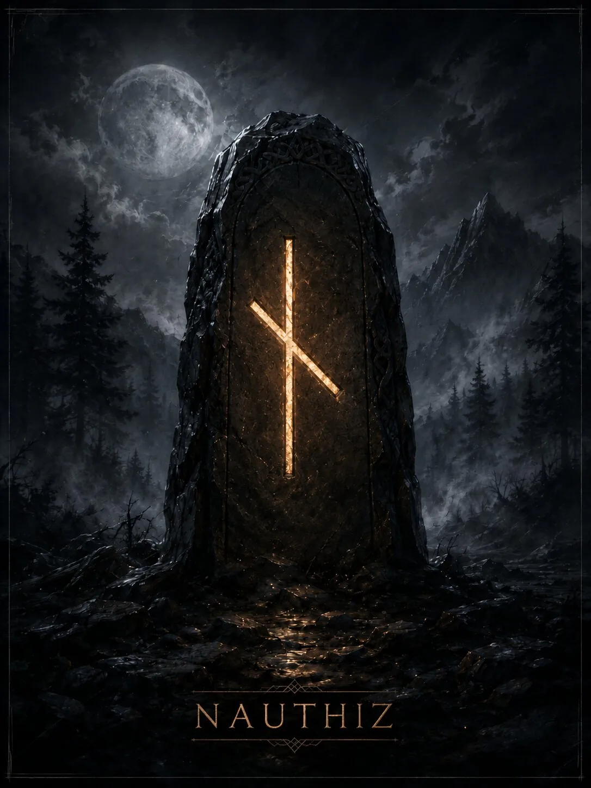

The rune of restriction, scarcity, and the necessity of acting with too little. It shows pressure from circumstances that forces a distinction between what is truly needed and what is merely wanted.
Core meaning
The rune of restriction, scarcity, and the necessity of acting with too little. It shows pressure from circumstances that forces a distinction between what is truly needed and what is merely wanted.
Historical tradition
The name is associated with need and compelling necessity. The rune poems connect this image with hardship and, at the same time, the ability to endure it. Modern divination develops the themes of restriction, discipline, and forced choice.
- Key meanings: need, restriction, necessity, scarcity, patience, pressure, discipline, dependence
Modern divination
These divinatory meanings belong to modern runic practice.
- Positive expression: A difficult situation helps establish priorities, discipline, and economical use of resources.
- Negative expression: Scarcity, pressure, dependence, a sense of having no way out, or a prolonged need to endure.
- Advice: Cut what is unnecessary, define the minimum you need, and act within your actual means.
- Warning: Do not increase your obligations until the cost of those already in place is clear.
- Outcome: A result is possible through restrictions, economy, and endurance, rather than through a rapid breakthrough.
Psychological state
A focus on lack; its constructive side is the ability to endure restrictions, while its destructive side is a sense of permanent poverty of resources.
Spiritual meaning
Distinguishing desire from necessity and developing will through voluntary discipline instead of chaotic compulsion.
Upright and reversed positions
Divinatory interpretation and the use of reversed positions belong to modern runic practice. No ancient manual survives for the Elder Futhark that establishes this method of divination as the only correct one. Nauthiz is usually considered without a separate reversed position; its tension is read from context.
Differences between schools
The historical meaning of need is reliable; magical ideas of compulsion and ‘bonds’ are a modern development of the original symbol.
Summary
The rune of restriction, scarcity, and the necessity of acting with too little. It shows pressure from circumstances that forces a distinction between what is truly needed and what is merely wanted.
Finances
Lack of money, mandatory payments, a strict budget, and the need to economize.
Work
A burdensome duty, strict limits, work done ‘because it has to be,’ or a shortage of time or resources.
Relationships
Dependence, painful need, forced distance, or a bond maintained by obligations.
Family and home
A period of economizing, limited comfort, and a need to distribute a scarce resource.
Rune as a description of a person
A disciplined person or one severely constrained by circumstances; in the shadow, inclined to live through a constant sense of duty and scarcity.
- Thoughts: ‘What must be done even if I do not want to do it?’
- Feelings: Need, anxious attachment, and a sense of lack.
- Actions: They endure, reduce, restrict themselves, and carry out what is unavoidable.
Modern magical meaning
This is modern esoteric practice, not a historically attested tradition.
- Modern magical interpretation: Restriction, binding, compulsion within limits, and concentration on what is necessary.
- Purposes: Stopping excess, creating discipline, or keeping a process within prescribed bounds.
- Strengthens: Necessity, fixation on the task, and endurance.
- Weakens: Excess and dissipation.
- Risk: Creating a situation that is too rigid and oppressive, or strengthening dependence.
Rune in formulas and staves
Nauthiz is used as a limiter or ‘knot of necessity’: Nauthiz+Isa — a hard stop; Nauthiz+Tiwaz — discipline for the sake of a goal; Nauthiz+Fehu — a resource under restriction.
Esoteric interpretation
In modern esoteric interpretation
Modern practitioners may see Nauthiz as an imposed restriction, attachment, or compulsion, especially beside Gebo, Isa, or Thurisaz.
Possible everyday explanation
Alternative explanation
An everyday alternative: debts, dependent relationships, work under pressure, scarce resources, or fear of loss. These causes should first be analyzed directly.
Characteristic combinations
- Nauthiz + Fehu: Financial need or forced expenses.
- Nauthiz + Gebo: Obligation or dependence within a union.
- Nauthiz + Isa: Severe restriction and stagnation.
Rune in formulas and staves
Nauthiz is used as a limiter or ‘knot of necessity’: Nauthiz+Isa — a hard stop; Nauthiz+Tiwaz — discipline for the sake of a goal; Nauthiz+Fehu — a resource under restriction.
Divinatory, magical, and diagnostic meanings belong to modern runic practice. The historical section draws on rune poems and epigraphy. The material is for reference and entertainment.